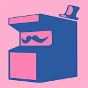

- PROJETOS -
Aqui estão os principais projetos que Criei e/ou tive participação.
(Passe o mouse para ver melhor)
DT3 Quest
ago/2020
Vença o prédio de desafios da DT3, em forma de mini-games, escolha o seu personagem, para descobrir qual a cadeira gamer ideal para você!
Disponível para: e

Pistol Healer
mar/2021
Puzzle Platformer onde a sua vida é a sua arma que pode curar os corações
Disponível para:
Run After Him!
fev/2019
Runner de Plataforma em 2D, onde o jogador controla Uma Garota em uma Masmorra que está em busca de achar seu amado namorado que foi raptado por um Monstro.
Disponível para: e
Crônicas de Luman
nov/2017
Jogo de Ação e Aventura 3D, com mecânica Point-and-click, que se passa no Reino de Luman. Acompanhe Ana nesta aventura de fantasia medieval repleta de desafios.
Disponível para:

Yokai Island
jan/2019
Yokai Island é um jogo Action 2D Platoformer, onde você joga como um Samurai que está em uma missão para eliminar todos os Yokais da Ilha.
Disponível para: e

AR Book - O livro de Deus
abril/2018
O livro de deus é um livro de realidade aumentada voltado para o publico infantil. Reviva a experiencia de contar historias para crianças de uma nova forma.
Disponível para:
Sea Rescue
jun/2017
Resgate os mergulhadores que estão sendo atacados por submarinos e tubarões neste Arcade inspirado no Sea Quest do Atari.
Disponível para: